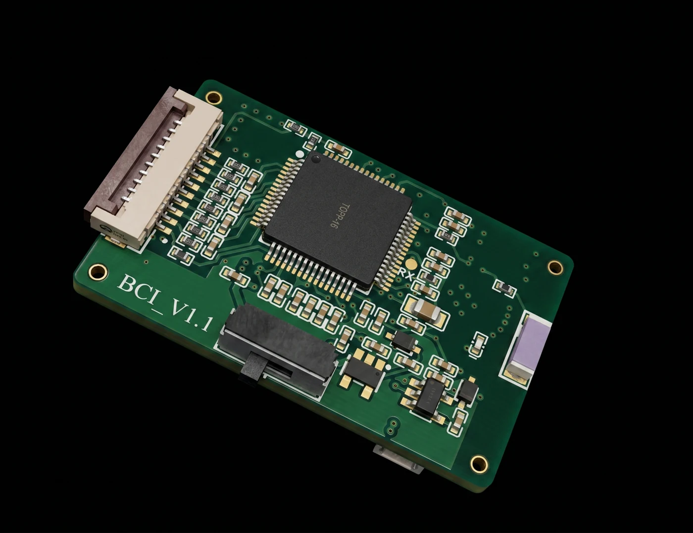
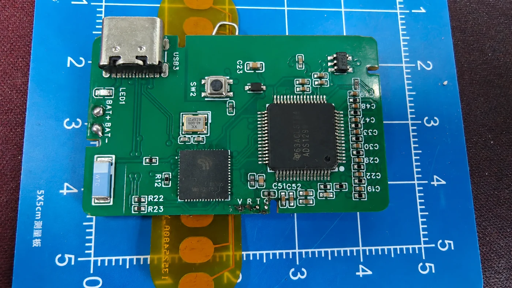

连接硬件、数据与灵感。从 BCI 采集板到多平台上位机，在这里找到产品资料、开发指南与代码接口。
按产品系列查阅资料，按硬件版本开始开发。

板卡外观、接口识别、参考资料与开发准备。

采集固件、BLE 数据链路与多平台上位机开发。
让每一步开发，都有清晰的参考。
服务 UUID、控制命令、数据帧与数值换算。
查看实时波形，配置数字滤波，记录 CSV 数据。
Android 安装与连接，iOS 工程构建与使用说明。
源码、安装包、PDF 文档和操作演示。
核对板卡、供电和软件版本，用信号源或模拟器验证采集流程。